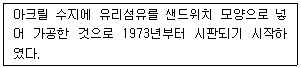
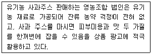
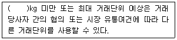
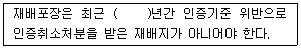
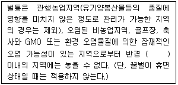
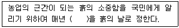
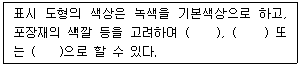
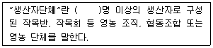

유기농업기사 (2021-08-14 기출문제)
1과목: 재배원론
1. 다음 중 연작 장해가 가장 심한 작물은?
- 당근
- 시금치
- 수박
- 파
(정답률: 76%)

2. 고구마의 저장온도와 저장습도로 가장 적합한 것은?
- 1~4℃, 60~70%
- 5~7℃, 70~80%
- 13~15℃, 80~90%
- 15~17℃, 90%이상
(정답률: 74%)
3. 다음 중 질산태질소에 관한 설명으로 옳은 것은?
- 산성토양에서 알루미늄과 반응하여 토양에 고정되어 흡수율이 낮다.
- 작물의 이용형태로 잘 흡수ㆍ이용하지만 물에 잘 녹지 않으며 지효성이다.
- 논에서는 탈질작용으로 유실이 심하다.
- 논에서 환원충에 주면 비효가 오래 지속된다.
(정답률: 69%)
4. 다음 중 세포의 신장을 촉진시키며 굴광현상을 유발하는 식물호르몬은?
- 옥신
- 지베렐린
- 사이토카이닌
- 에틸렌
(정답률: 82%)
5. 다음 중 하고현상이 가장 심하지 않은 목초는?
- 티머시
- 켄터키블루그래스
- 레드클로버
- 화이트클로버
(정답률: 58%)
6. 식물의 무기영양설을 제창한 사람은?
- 바빌로프
- 캔돌레
- 린네
- 리비히
(정답률: 67%)
7. 다음 중 파종량을 늘려야 하는 경우로 가장 적합한 것은?
- 단작을 할 때
- 발아력이 좋을 때
- 따뜻한 지방에 파종할 때
- 파종기가 늦어질 때
(정답률: 83%)
8. 벼, 보리 등 자가수분작물의 종자갱신방법으로 옳은 것은? (단, 기계적 혼입의 경우는 제외한다.)
- 자가에서 정선하면 종자교환 할 필요가 없다.
- 원종장에서 보급종을 3~4년마다 교환한다.
- 원종장에서 10년마다 교환한다.
- 작황이 좋은 농가에서 15년마다 교환한다.
(정답률: 88%)
9. 토양의 pH가 1단위 감소하면 수소이온의 농도는 몇 % 증가하는가?
- 1 %
- 10 %
- 100 %
- 1000 %
(정답률: 47%)
10. 다음 중 봄철 늦추위가 올 때 동상해의 방지책으로 옳지 않은 것은?
- 발연법
- 송풍법
- 연소법
- 냉수온탕법
(정답률: 70%)
11. 건물생산이 최대로 되는 단위면적당 군락엽면적을 뜻하는 용어는?
- 최적엽면적
- 비엽면적
- 엽면적지수
- 총엽면적
(정답률: 72%)
12. 작물이 정상적으로 생육하는 토양의 유효수분 점위(pF)는?
- 1.8~3.0
- 18~30
- 180~300
- 1800~3000
(정답률: 86%)
13. 다음 중 벼 장해형 냉해에 가장 민감한 시기로 옳은 것은?
- 유묘기
- 감수분열기
- 최고분얼기
- 유숙기
(정답률: 74%)
14. 무기성분의 산화와 환원형태로 옳지 않은 것은?
- 산화형: SO4, 환원형: H2S
- 산화형: NO3, 환원형: NH4
- 산화형: CO2, 환원형: CH4
- 산화형: Fe++, 환원형: Fe+++
(정답률: 62%)
15. 다음 중 영양번식을 하는데 발근 및 활착을 촉진하는 처리가 아닌 것은?
- 황화처리
- 프라이밍
- 환상박피
- 옥신류처리
(정답률: 54%)
16. 다음 중 방사선을 육종적으로 이용할 때에 대한 설명으로 옳지 않은 것은?
- 주로 알파선을 조사하여 새로운 유전자를 창조한다.
- 목적하는 단일유전자나 몇 개의 유전자를 바꿀 수 있다.
- 연관군 내의 유전자를 분리할 수 있다.
- 불화합성을 화합성으로 변화시킬 수 있다.
(정답률: 89%)
17. 다음 중 인과류에 해당하는 것은?
- 앵두
- 포도
- 감
- 사과
(정답률: 84%)
18. 질소농도가 0.3% 인 수용액 20L를 만들어서 엽면시비를 할 때 필요한 요소비료의 양은?(단, 요소비료의 질소함량은 46%이다.)
- 약 28g
- 약 60g
- 약 77g
- 약 130g
(정답률: 47%)
19. 영양번식을 위해 엽삽을 이용하는 것은?
- 베고니아
- 고구마
- 포도나무
- 글라디올러스
(정답률: 66%)
20. 화곡류에서 잎을 일어서게 하여 수광율을 높이고, 증산을 줄여 한해 경감 효과를 나타내는 무기성분으로 옳은 것은?
- 니켈
- 규소
- 셀레늄
- 리튬
(정답률: 83%)
2과목: 토양비옥도 및 관리
21. 다음 중 풍화에 가장 강한 1차 광물은?
- 휘석
- 백운모
- 정장석
- 감람석
(정답률: 67%)
22. 다음 중 작물생육의 필수원소가 아닌 것은?
- Zn
- Cu
- Co
- Fe
(정답률: 81%)
23. 산성토양에 대한 설명으로 틀린 것은?
- 작물 뿌리의 효소 활성을 억제한다.
- 인산이 활성알루미늄과 결합하여 인산 결핍이 초래된다.
- 산성이 강해지면 일반적으로 세균은 늘고 사상균은 줄어든다.
- 낮은 pH로 인해 독성 화합물의 용해도가 증가한다.
(정답률: 78%)
24. 최근 경작지 토양의 양분불균형이 문제가 되고 있는데 그 원인으로 거리가 먼 것은?
- 완숙 퇴비의 시용
- 시비 없는 작물 재배
- 3요소 복합비료에 편중된 시비
- 미량원소의 공급 미흡
(정답률: 61%)
25. 기후가 토양의 특성에 미치는 영향에 대한 설명으로 틀린 것은?
- 강수량이 많을수록 토양생성속도가 빨라지고 토심도 깊어진다.
- 고온다습한 기후에서는 철광물이 많이 잔류된다.
- 한랭하고 강수량이 많으면 유기물 함량이 적은 토양이 생성된다.
- 건조한 기후 지대에서는 염류성 또는 알칼리성 토양이 생성된다.
(정답률: 19%)
26. 질산화작용 억제제에 대한 설명으로 틀린 것은?
- 질산화작용에 관여하는 미생물의 활성을 억제한다.
- 개발 제품으로는 Nitrapyrin, Dwell 등이 있다.
- 밭작물은 NO3-보다 NH4+를 더 많이 흡수하기 때문에 적극 사용한다.
- 질소 성분을 NH4+로 유지시켜 용탈에 의한 비료손실을 줄이는 효과가 있다.
(정답률: 65%)
27. 식물의 양분흡수 이용능력에 직접적으로 영향을 주는 요인으로 거리가 먼 것은?
- 뿌리의 표면적
- 뿌리의 호흡작용
- 근권의 질소가스 농도
- 양분 활성화와 관련된 뿌리분비물의 종류와 양
(정답률: 64%)
28. 토양의 떼알(입단) 구조 생성 및 발달 조건과 관계없는 것은?
- 수화도가 낮은 양이온성 물질을 토양에 준다.
- 토양을 멸균처리하여 미생물의 활동을 억제시킨다.
- 건조와 습윤 조건을 반복시켜 토양을 관리한다.
- 녹비작물이나 목초를 재배한다.
(정답률: 61%)
29. 토성을 구분하거나 결정할 때 이용되는 것으로 거리가 먼 것은?
- 토성삼각도
- 촉감법
- Stokes 공식
- Munsell 기호
(정답률: 58%)
30. 다음 토양 표층에서 발견되는 생물 중 개체수가 가장 많은 것은?
- 방선균
- 지렁이
- 진드기
- 선충
(정답률: 64%)
31. 기온의 변화는 암석의 물리적 풍화를 촉진시킨다. 그 원인으로 가장 적절한 것은?
- 팽창수축 현상
- 산화환원 현상
- 염기용탈 현상
- 동형치환 현상
(정답률: 85%)
32. 유기물의 부식화 과정에 가장 크게 영향을 미치는 요인은?
- 토양 온도
- 유기물에 함유된 탄소와 질소의 함량비
- 토양의 수소이온농도
- 토양의 모재
(정답률: 68%)
33. 여름철 논토양의 지온 상승 시 나타나는 현상과 가장 관련이 깊은 것은?
- 염기포화도 증가
- 탈질작용 억제
- 암모니아화작용 촉진
- 부식물 직접 증가
(정답률: 58%)
34. 다음 중 포장용수량이 가장 큰 토성은?
- 사양토
- 양토
- 식양토
- 식토
(정답률: 74%)
35. 토양유기물 분해에 적절한 조건이 아닌 것은?
- 혐기성 조건일 때
- 온도가 25~35℃일 때
- 토양산도가 중성에 가까울 때
- 토양 공극의 약 60%가 물로 채워져 있을 때
(정답률: 68%)
36. 토양 부식에 대한 설명으로 틀린 것은?
- 토양 pH 변화에 완충작용을 한다.
- 토양 미생물에 의하여 쉽게 분해된다.
- 토양의 양이온치환용량을 증가시킨다.
- 토양 입단화에 도움을 준다.
(정답률: 66%)
37. 우리나라 경작지 토양 중 통상적으로 영양염류의 함량이 가장 높은 곳은?
- 시설재배지
- 과수원
- 논
- 밭
(정답률: 75%)
38. 다음 점토광물 중 수분함량에 따라 부피가 가장 크게 변하는 것은?
- 스멕타이트
- 카올리나이트
- 버미큘라이트
- 일라이트
(정답률: 28%)
39. 탄질률(C/N율)이 매우 높은 유기물을 토양에 시용하였을 때 나타날 수 있는 현상은?
- 탈질
- 질소의 부동화
- 분해속도 증가
- 암모니아의 휘산
(정답률: 67%)
40. 완효성 비료에 속하지 않는 것은?
- 피복요소
- IBDU(isobutylidene diurea)
- Fe-EDTA
- CDU(crotonylidene diurea)
(정답률: 48%)
3과목: 유기농업개론
41. 다음 중 내습성이 가장 강한 작물은?
- 당근
- 미나리
- 고구마
- 감자
(정답률: 86%)
42. 「농림축산식품부 소관 친환경농어업 육성 및 유기식품 등의 관리ㆍ지원에 관한 법률 시행규칙」상 병해충 관리를 위하여 사용이 가능한 물질은? (단, 사용 가능 조건을 모두 만족한다.)
- 사람의 배설물
- 버섯재배 퇴비
- 난황
- 벌레 유기체
(정답률: 68%)
43. 병충해의 방제에 있어서 동반작물을 같이 재배하면 병충해를 경감시키고 잡초를 방제할 수 있다. 다음 작물과 동반작물의 조합으로 적절하지 않은 것은?
- 완두콩 – 당근, 양배추, 주키니 호박
- 오이 – 완두, 콜라비, 파, 옥수수
- 양파 – 당근, 박하, 딸기
- 상추 – 강낭콩, 감자, 딜, 양배추
(정답률: 45%)
44. 친환경농업의 목적으로 가장 거리가 먼 것은?
- 지속적 농업발전
- 안전농산물 생산
- 고비용ㆍ고투입 농산물 생산
- 환경보전적 농업발전
(정답률: 88%)
45. 토양 미생물 활용은 식물보호를 위하여 사용되는데 이는 길항, 항생 및 경합작용을 이용한 것이다. 이 때 얻을 수 있는 효과로 가장 거리가 먼 것은?
- 병 감염원 감소
- 작물표면 보호
- 연작 장해 촉진
- 저항성 증가
(정답률: 90%)
46. 두과 녹비작물 재배에 대한 설명으로 틀린 것은?
- 경운, 파종, 수확 및 토양 내 혼입 등 작업에 집약적인 노동력이 필요하다.
- 녹비작물의 효과는 단기간보다 장기간에 걸쳐 서서히 나타난다.
- 일부 녹비작물은 가축의 사료 또는 식량자원으로 활용이 가능하다.
- 녹비작물을 주작물 사잉에 간작의 형태로 재배하는 경우 주작물과 질소 경합이 발생할 수 있다.
(정답률: 62%)
47. ‘부엽토와 지렁이’라는 책에서 자연에서 지렁이가 담당하는 역할에 관해 기술하면서, 만일 지렁이가 없다면 식물은 죽어 사라질 것이라고 결론지었으며, 유기농법의 이론적 근거를 최초로 제공한 사람은?
- Franklin King
- Thun
- Steiner
- Darwin
(정답률: 70%)
48. 작물별 3요소(N:P:K) 흡수비율 중 옳은 것은?
- 옥수수 – 4:1:3
- 콩 – 5:1:1.5
- 감자 – 3:2:4
- 벼 – 4:2:3
(정답률: 44%)
49. 유기사료 생산에 대한 설명으로 가장 적합한 것은?
- 유기사료는 일반 작물과 같은 방법으로 재배하여도 무방하다.
- 유기사료는 일반 작물과 같은 방법으로 재배하고 살충제만 사용하지 않으면 된다.
- 유기사료는 일반 작물과 같은 방법으로 재배하고 제초제만 사용하지 않으면 된다.
- 유기사료는 유전자 조작이 되지 않은 종묘를 합성비료와 합성농약을 사용하지 않고 생산해야 한다.
(정답률: 86%)
50. 유기벼 재배에서 제초제를 사용하지 않고 친환경적 잡초방제를 할 때, 어느 품종을 선택하는 것이 잡초 발생 억제에 가장 도움이 되겠는가?
- 초기생육이 늦고 키가 작은 품종
- 유효분얼이 빠르고 키가 큰 품종
- 활착기가 길고 후기 생육이 왕성한 품종
- 유효분얼기간이 짧고 이삭수가 적은 품종
(정답률: 64%)
51. 해마다 좋은 결과를 시키려면 해당 과수의 결과습성에 알맞게 진정을 해야 하는데, 2년생 가지에 결실하는 것으로만 나열된 것은?
- 비파, 호두
- 포도, 감귤
- 감, 밤
- 매실, 살구
(정답률: 65%)
52. 다음 중 산성토양에 가장 강한 작물은?
- 감자
- 겨자
- 고추
- 완두
(정답률: 68%)
53. 친환경적인 잡초발생 억제 방법으로 가장 적당한 것은?
- 변온 처리
- 화학자재 투입
- 경작층에 산소 공급
- 지표면에 대한 적색광 차단
(정답률: 74%)
54. 동물이 누려야 할 복지로 거리가 먼 것은?
- 도축장까지의 안전운반을 위한 합성 진정제 접종의 자유
- 행동 표현의 자유
- 갈증, 허기, 영양결핍으로부터의 자유
- 공포, 스트레스로부터의 자유
(정답률: 84%)
55. 다음에서 설명하는 시설원예 자재는?

- FRP판
- FRA판
- MMA판
- PC판
(정답률: 66%)
56. 담수 화의 논토양 특성으로 틀린 것은?
- 표면의 환원층과 그 밑의 산화층으로 토충분화한다.
- 논토양의 환원층에서 탈질작용이 일어난다.
- 논토양의 산화층에서 질화작용이 일어난다.
- 담수 전의 마른 상태에서는 환원층을 형성하지 않는다.
(정답률: 54%)
57. 유기축산물 생산 시 유기양돈에서 생산할 수 있는 육가공제품은?
- 치즈
- 버터
- 햄
- 요겨트
(정답률: 81%)
58. 종자의 증식 보급체계로 옳은 것은?
- 기본식물 양성 → 원원종 생산 → 원종생산 → 보급종 생산
- 원종 생산 → 원원종 생산 → 보급종 생산 → 기본식물 양성
- 원원종 생산 → 원종 생산 → 기본식물 양성 → 보급종 생산
- 보급종 생산 → 원종 생산 → 원원종 생산 → 기본식물 양성
(정답률: 77%)
59. 다음 중 포식성 곤충은?
- 침파리
- 고치벌
- 꼬마벌
- 무당벌레
(정답률: 79%)
60. 유기축산 젖소관리에서 착유우의 이상적인 건유기간으로 옳은 것은?
- 10 ~ 15일
- 20 ~ 30일
- 50 ~ 60일
- 80 ~ 100일
(정답률: 70%)
4과목: 유기식품 가공.유통론
61. 생선, 육류 등의 가스충진(gas flushing) 포장에 대한 설명으로 잘못된 것은?
- 산소, 질소, 탄산가스 등이 주로 사용된다.
- 세균의 발육을 억제하기 위해서는 주로 탄산가스가 사용된다.
- 가스충전포장에 사용되는 포장 재료는 기체투과도가 낮은 재료를 사용하여야 한다.
- 가스충진포장을 한 제품의 경우 일반적으로 상온에 저장하여도 무방하다.
(정답률: 64%)
62. 식품첨가물과 용도의 연결이 틀린 것은?
- 곰팡이 생성 방지 - 폴리라이신
- 항균성 물질 생산 - 유산균
- 항산화 작용 – 포도씨 추출물
- 과실, 채소의 선도 유지 – 히노키티올
(정답률: 30%)
63. 다음 [보기]에서 사용하는 마케팅 전략은?

- S(Strength)-O(Opportunity) 전략
- S(Strength)-T-(Treat) 전략
- W(Weak)-O(Opportunity) 전략
- W(Weak)-T(Treat) 전략
(정답률: 77%)
64. 현재 우리나라에서 시행하는 친환경 농축산물 관련 인증제도에 해당하지 않는 것은?
- 유기농산물 인증
- 무농약농산물 인증
- 저농약농산물 인증
- 유기축산물 인증
(정답률: 84%)
65. 통조림과 병조림의 제조 중 탈기의 효과가 아닌 것은?
- 산화에 의한 맛, 색, 영양가 저하 방지
- 저장 중 통 내부의 부식 방지
- 호기성 세균 및 곰팡이의 발육 억제
- 단백질에서 유래된 가스성분 생성
(정답률: 86%)
66. 가열 살균법과 온도, 시간의 연결이 적절하지 않은 것은?
- 고온순간살균, 75~75℃, 15~20초
- 저온장시간살균, 63~65℃, 10~15분
- 초고온살균, 130~150℃, 0.5~5초
- 건열살균, 150~180℃, 1~2시간
(정답률: 59%)
67. 고전압 펄스 전기장 처리법에 대한 설명으로 옳은 것은?
- 고전압과 저전압을 번갈아 가하면서 우유 지방구를 균질하는 방법이다.
- 세포막 내ㆍ외의 전위차를 크게 형성함으로써 미생물의 세포막을 파괴하여 미생물을 저해시키는 방법이다.
- 고전압을 반복적으로 가하면서 농산물을 파쇄하여 성분추출을 용이하게 하는 방법이다.
- 고압에 의해 세포 내 고분자 물질의 입체구조를 변화시킴으로써 세포를 사멸시키는 방법이다.
(정답률: 50%)
68. 범위의 경제성이 발생하는 현상과 관련한 설명으로 적합하지 않은 것은?
- 결합생산 또는 복합경영 시 발생한다.
- 소품종 대량생산 또는 유통 시 가변비용 감축으로 발생한다.
- 복합경영 시 중복비용의 절감 때문에 발생한다.
- 다품종 소량생산 또는 유통과정에서 발생한다.
(정답률: 52%)
69. Clostridium botulinum의 z값은 10℃이다. 121℃에서 가열하여 균의 농도를 100000의 1로 감소시키는데 20분이 걸렸다면, 살균온도를 131℃로 하여 동일한 사멸률을 보이려면 몇 분을 가열하여야 하는가?
- 1분
- 2분
- 3분
- 4분
(정답률: 74%)
70. 식품의 물적 유통기능과 관계가 적은 것은?
- 시간적 효용
- 장소적 효용
- 생산적 효용
- 형태적 효용
(정답률: 56%)
71. 치즈 제조 시 사용하는 렌넷(rennet)에 포함된 렌닌(rennin)의 기능은?
- 카파 카제인(k-casein)의 분해에 의한 카제인(casein) 안정성 파괴
- 알파 카제인(α-casein)의 분해에 의한 카제인(casein) 안정성 파괴
- 베타 락토글로불린(β-lactoglobulin)의 분해에 의한 유청단백질 안정성 파괴
- 알파 락트알부민(α-lactalbumin) 분해에 의한 유청단백질 안정성 파괴
(정답률: 57%)
72. 수박 한통의 유통단계별 가격이 농가판매가격 5000원, 위탁상가격 6000원, 도매가격 6500원, 그리고 소비자가격은 8500원이라 한다면, 수박 한통의 유통마진은 얼마인가?
- 1000원
- 1500원
- 2000원
- 3500원
(정답률: 70%)
73. 청국장 제조에 사용하는 납두(natto)균과 가장 비슷한 성질을 갖는 균은?
- Mucor rouxii
- Saccharomyces cerevisiae
- Lactobacillus casei
- Bacillus subtilis
(정답률: 64%)
74. HACCP 지정 식품처리장의 손세척 및 소독 방법으로 잘못된 것은?
- 자동세정을 원칙으로 한다.
- 청정구역으로 들어갈 경우 손세정 후 자동건조장치사용을 원칙으로 한다.
- 손소독 장치를 설치하는 것이 바람직하다.
- 손을 말릴 수 있는 물품으로 면타올을 준비해야 한다.
(정답률: 86%)
75. 분자 내에 자성 쌍극자를 다량 함유한 DNA나 단백질 등의 생물분자에 5~10Tesla 정도의 자기장을 5~500kHz로 처리하여 분자 내 공유결합을 파괴시켜 미생물을 사멸하는 방법은?
- 고강도 광펄스 살균
- 고전압 펄스 전기장 살균
- 마이크로파 살균
- 진동 자기장 펄스 살균
(정답률: 63%)
76. 유기농업에 대한 내용으로 가장 거리가 먼 것은?
- 녹색 혁명에 의한 관행(慣行) 농업
- 생태학적 자원 순환 체제 농업
- 지속 가능한 농업(sustainable agriculture)
- 한경 보전형 농업
(정답률: 88%)
77. 농산물 표준규격의 거래단위에 관한 내용으로 ( )안에 알맞은 것은?

- 3
- 5
- 7
- 10
(정답률: 61%)
78. 식품의 이물을 검사하는 방법이 아닌 것은?
- 진공법
- 체분별법
- 여과법
- 와일드만플라스크법
(정답률: 70%)
79. 포장재질에 대한 설명으로 적절하지 않은 것은?
- 폴리스틸렌(PS): 비교적 무거운 편이고 고온에서 견디는 힘이 강하다.
- 폴리프로필렌(PP): 표면광택과 투명성이 우수하며 내한성, 방습성이 좋다.
- 폴리염화비닐(PVC): 열접착성, 광택성, 경제성이 좋으나 태울 경우 유독가스가 발생한다.
- 폴리에스터(PET): 기체 및 수증기 차단성이 우수하며, 인쇄성, 내열성, 내한성이 좋다.
(정답률: 71%)
80. 유기의 개념과 거리가 먼 것은?
- 지속가능성
- 친환경
- 생태적
- 유전자변형
(정답률: 88%)
5과목: 유기농업관련 규정
81. 「농립축산식품부 소관 친환경농어업 육성 및 유기식품 등의 관리ㆍ지원에 관한 법률 시행규칙」상 유기농산물 및 유기임산물 생산시 병충해 관리를 위해 사용 가능한 물질 중 사용 가능 조건이 ‘달팽이 관리용으로만 사용’인 것은?
- 과망간산칼륨
- 황
- 맥반석
- 인산철
(정답률: 57%)
82. 「유기식품 및 무농약농산물 등의 인증에 관한 세부실시 요령」상 무농약농산물 생산에 필요한 인증기준 내용이 틀린 것은?
- 재배포장 주변에 공동방제구역 등 오염원이 있는 경우 이들로부터 적절한 완충지대나 보호시설을 확보하여야 한다.
- 재배포장의 토양은 토양 비옥도가 유지 및 개선되도록 노력하여야 하며, 염류의 검출량은 0.01mg/kg 이하여야 한다.
- 화학비료는 농촌진흥청장ㆍ농업기술원장 또는 농업기술센터소장이 재배포장별로 권장하는 성분량의 3분의 1 이하를 범위 내에서 사용시기와 사용자재에 대한 계획을 마련하여 사용하여야 한다.
- 가축분뇨 퇴ㆍ액비를 사용하는 경우에는 완전히 부숙시켜서 사용하여야 하며, 이의 과다한 사용, 유실 및 용탈 등으로 인하여 환경오염을 유발하지 아니하도록 하여야 한다.
(정답률: 41%)
83. 「친환경농어업 육성 및 유기식품 등의 관리ㆍ지원에 관한 법률」상 유기농어업자재 공시의 유효기간은 공시를 받은 날부터 얼마까지로 하는가?
- 6개월
- 1년
- 3년
- 5년
(정답률: 45%)
84. 「유기식품 및 무농약농산물 등의 인증에 관한 세부실시 요령」상 인증기관이나 인증번호가 변경되었으나 기존 제작된 포장재 재고량이 남았을 경우 적절한 조치 사항은?
- 별도의 승인 없이 남은 재고 포장재의 사용이 가능하다.
- 포장재 재고량 및 그 사용기간에 대해 농림축산식품부장관의 승인을 받아 기존에 제작된 포장재를 사용할 수 있다.
- 포장재 재고량 및 그 사용기간에 대해 인증기관의 승인을 받아 기존에 제작된 포장재를 사용할 수 있다.
- 포장재의 표시 사항은 변경이 불가능하므로 남은 재고량은 즉시 폐기처분하고 변경된 포장재에 대한 승인을 받아야 한다.
(정답률: 65%)
85. 「농림축산식품부 소관 친환경농어업 육성 및 유기식품 등의 관리ㆍ지원에 관한 법률 시행규칙」상 “유기식품등”에 해당되지 않는 것은?
- 유기농축산물
- 유기가공식품
- 비식용유기가공품
- 수산물가공품
(정답률: 67%)
86. 「친환경농어업 육성 및 유기식품 등의 관리ㆍ지원에 관한 법률」상 인증을 받지 아니한 사업자가 인증품의 포장을 해체하여 재포장한 후 유기표시를 하였을 경우의 과태료 기준은 얼마인가?
- 2000만원 이하
- 1500만원 이하
- 1000만원 이하
- 500만원 이하
(정답률: 61%)
87. 「농립축산식품부 소관 친환경농어업 육성 및 유기식품 등의 관리ㆍ지원에 관한 법률 시행규칙」에 따른 유기가공식품의 생산에 사용 가능한 가공보조제와 그 사용 가능 범위가 옳게 짝지어진 것은?
- 밀납 - 이형제
- 백도토 – 설탕 가공
- 과산화수소 - 응고제
- 수산화칼슘 – 여과보조제
(정답률: 37%)
88. 「농림축산식품부 소관 친환경농어업 육성 및 유기식품 등의 관리ㆍ지원에 관한 법률 시행규칙」상 70% 이상이 유기농축산물인 제품의 제한적 유기표시 허용기준으로 틀린 것은?
- 유기 또는 이와 유사한 용어를 제품명 또는 제품명의 일부로 사용할 수 없다.
- 표시장소는 주 표시면을 제외한 표시면에 표시할 수 있다.
- 원재료명 표시란에 유기농축산물의 총함량 또는 원료ㆍ재료별 함량을 g 혹은 kg으로 표시해야 한다.
- 최종 제품에 남아 있는 원료 또는 재료의 70% 이상의 유기농축산물이어야 한다.
(정답률: 44%)
89. 「농림축산식품부 소관 친환경농어업 육성 및 유기식품 등의 관리ㆍ지원에 관한 법률 시행규칙」상 인증신청자가 심사결과에 대한 이의가 있어 인증심사를 실시한 기관에 재심사를 신청하고자 할 때 인증심사 결과를 통지받은 날부터 얼마 이내에 관련 자료를 제풀해야 하는가?
- 7일
- 10일
- 20일
- 30일
(정답률: 57%)
90. 「유기식품 및 무농약농산물 등의 인증에 관한 세부실시 요령」상 유기농산물 생산에 필요한 재배포장의 구비요건에 대한 설명으로 ( )안에 알맞은 것은?

- 1
- 2
- 3
- 4
(정답률: 63%)
91. 「친환경농어업 육성 및 유기식품 등의 관리ㆍ지원에 관한 법률」상 인증기관의 지정취소 등에 관한 사항에서 정당한 사유 없이 1년 이상 계속하여 인증을 하지 아니한 경우 인증기관이 받는 처벌은?
- 지정 취소
- 3개월 이내의 업무 일부 정지
- 3개월 이내의 업무 전부 정지
- 12개월 이내의 업무 전부 정지
(정답률: 71%)
92. 「친환경농어업 육성 및 유기식품 등의 관리ㆍ지원에 관한 법률 시행령」상 농림축산식품부장관ㆍ해양수산부장관 또는 지방자치단체의 장이 관련 법률에 따라 친환경농어업에 대한 기여도를 평가하고자 할 때 고려하는 사항이 아닌 것은?
- 친환경농수산물 또는 유기농어업자재의 생산ㆍ유통ㆍ수출 실적
- 친환경농어업 기술의 개발ㆍ보급 실적
- 유기농어업자재의 사용량 감축 실적
- 축산분뇨를 퇴비 및 액체비료 등으로 자원화한 실적
(정답률: 67%)
93. 「농림축산식품부 소관 친환경농어업 육성 및 유기식품 등의 관리ㆍ지원에 관한 법률 시행규칙」상 유기가공식품 생산 시 지켜야할 사항이 아닌 것은?
- 인증품에 인증품이 아닌 제품을 혼합하거나 인증품이 아닌 제품을 인증품으로 판매하지 않을 것
- 유전자변형생물체에서 유래한 원료 또는 재료를 사용하지 않을 것
- 사업자는 유기가공식품의 취급과정에서 대기, 물, 토양의 오염이 최소화되도록 문서화된 유기취급계획을 수립할 것
- 해충 및 병원균 관리를 위하여 우선적으로 방사선 조사방법을 사용할 것
(정답률: 75%)
94. 「농림축산식품부 소관 친환경농어업 육성 및 유기식품 등의 관리ㆍ지원에 관한 법률 시행 규칙」에 따라 유기농산물 및 유기인산물의 병해충 관리를 위해 사용 가능한 물질과 사용가능 조건이 옳게 짝지어진 것은?
- 담배잎차(순수 니코틴은 제외)-에탄올로 추출한 것일 것
- 라이아니아(Ryania) 추출물 – 쿠아시아(Quassia amara)에서 추출된 천연물질일 것
- 목초액 - 「산업표준화법」에 따른 한국산업표준의 목초액(KSM3939) 기준에 적합할 것
- 젤라틴 – 크롬(Cr)처리를 한 것일 것
(정답률: 53%)
95. 「유기식품 및 무농약농산물 등의 인증에 관한 세부실시 요령」상 인증품등의 사후관리 조사요령 중 생산과정조사에 대한 내용으로 틀린 것은?
- 사무소장 또는 인증기관은 인증서 교부 이후 인증을 받은 자의 농장소재지 또는 작업장 소재지를 방문하여 생산과정조사를 실시하여야 한다.
- 정기조사의 경우 인증기관은 각 인증 건별로 인증서 교부일 부터 3년이 지나기 전까지 1회 이상의 생산과정조사를 실시한다.
- 생산과정조사의 신뢰도가 낮아지지 않도록 조사대상, 조사시간, 이동거리 등을 감안하여 인증기관에서는 1일 조사대상 인증사업자수를 적정하게 선정하여 조사하여야 한다.
- 조사시기는 해당 농산물의 생육기간 또는 생산기간 중에 실시하되 가급적 인증기준 위반의 우려가 가장 높은 시기에 실시하고 인증 갱신 신청서가 접수되기 이전에 조사를 완료하여야 한다.
(정답률: 60%)
96. 「유기식품 및 무농약농산물 등의 인증에 관한 세부실시 요령」상 유기양봉제품 생산의 일반원칙 및 사육조건에 대한 내용이다. ( )안에 알맞은 내용은?

- 3km
- 4km
- 5km
- 6km
(정답률: 57%)
97. 「친환경농어업 육성 및 유기식품 등의 관리ㆍ지원에 관한 법률」상 ( )안에 알맞은 내용은?

- 9월 11일
- 6월 11일
- 5월 11일
- 3월 11일
(정답률: 68%)
98. 「친환경농어업 육성 및 유기식품 등의 관리ㆍ지원에 관한 법률」의 제정 목적으로 가장 거리가 먼 것은?
- 농어업의 환경보전기능 증대
- 농어업으로 인한 환경오염의 감축
- 친환경농어업을 실천하는 농어업인의 육성
- 고품질 농산물의 생산 증대
(정답률: 85%)
99. 「농림축산식품부 소관 친환경농어업 육성 및 유기식품 등의 관리ㆍ지원에 관한 법률 시행규칙」상 무농약농산물ㆍ무농약원료가공식품 표시를 위한 도형 작도법에 대한 내용이다. ( )안에 들어갈 수 있는 색상이 아닌 것은?

- 파란색
- 빨간색
- 노란색
- 검은색
(정답률: 56%)
100. 「유기식품 및 무농약농산물 등의 인증에 관한 세부실시 요령」상 다음 정의의 ( )안에 적합한 숫자는?

- 2
- 3
- 4
- 5
(정답률: 74%)